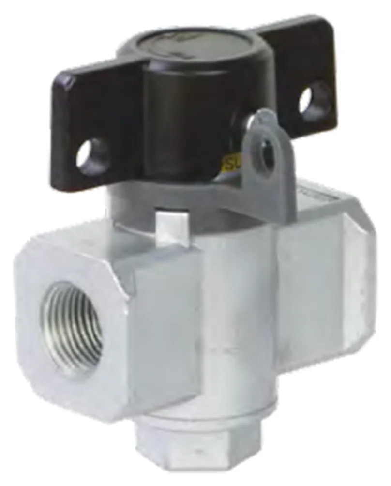

GROZ · Air Handling
Safety Lockout Valves
CAT NR LKV/1593 · ORD NR 60744
| CAT NR (catalogue number) | LKV/1593 |
|---|---|
| ORD NR (order number) | 60744 |
| Variant (printed column) | NPT |
| Description (printed in table) | Standard |
| Flow rate (exh) | 1600 LPM (56 CFM) |
| Flow rate (sup) | 3250 LPM (115 CFM) |
| Height (inch) | 3.70 |
| Height (mm) | 94 |
| Port size (inch) | 1/2 |
| Width (inch) | 2.76 |
| Width (mm) | 70 |
| Table section | SAFETY LOCKOUT VALVE ONLY |
Open in the catalogue The catalogue PDF, page 329
From the GROZ Fluid Handling CC-07 catalogue. Not yet verified: these details were read from the printed catalogue automatically; check the catalogue page before ordering.